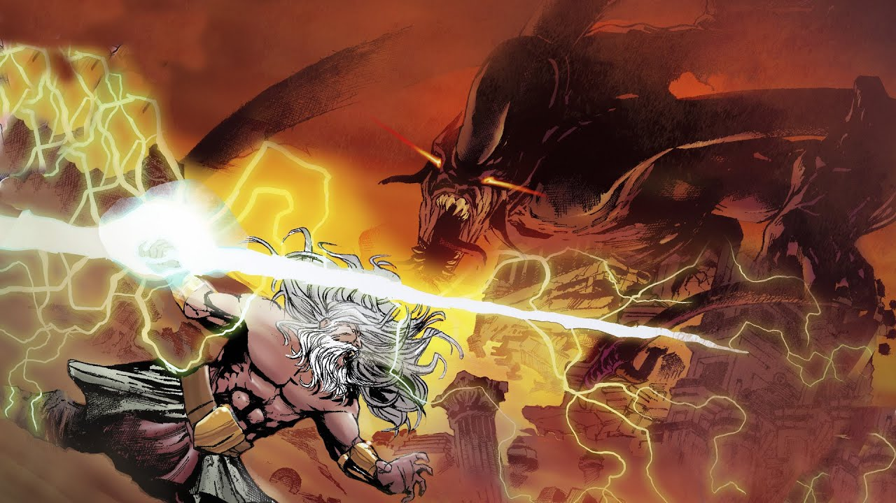
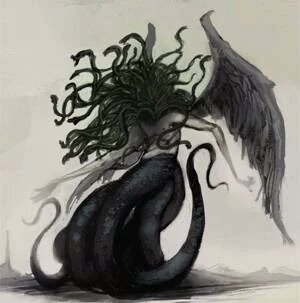

Tifão, uma horripilante besta nascida para destruir Olimpo – a morada dos deuses gregos, e Zeus. Ele é muitas vezes
identificado como a personificação de um terremoto. Ele morava numa gruta, cuja atmosfera envenenava com vapores tóxicos. É filho de Gaia, e após a derrota de seus irmãos Gigantes, Gaia pediu-lhe para vingá-los, assim como seus outros irmãos, os Titãs.
Segundo a mitologia grega, Tifão travou uma série de batalhas com Zeus, inclusive em uma delas, ele começou a destruir cidades e atirar montanhas em um acesso de raiva. Muitos dos deuses do Olimpo mudaram para a forma animal e se esconderam do gigante. Apenas Zeus, Dionísio e Atenas permaneceram. Atena acusou Zeus de ser um covarde e isso o levou a atacar Tifão antes que o monstro gigante pudesse assumir o controle do Monte Olimpo.
 
Ele era o maior de todos os montros, descrito com sua cabeça tocando as estrelas. Suas mãos não tinham dedos, pois cada mão era composta de dezenas de cabeças de serpente, cada uma cuspindo fogo ou veneno. Além de que a parte inferior de seu corpo era composta por duas viboras enormes enroladas.
Tifão, não se importava de ser evitado, e em vez de praticar atos monstruosos, estava satisfeito em viver em sua gruta, ao lado de sua companheira. Tifão teve muitos filhos e alguns deles muito conhecidos, sendo eles: Ortros, Esfinge, Cerbero, Quimera, Águia caucasiana, Hidra de Lerna, Ladão, Leão de Nemeia. A localização da caverna era um misterio, com possiveis localizações na Cilicia, Siria e Lidia.